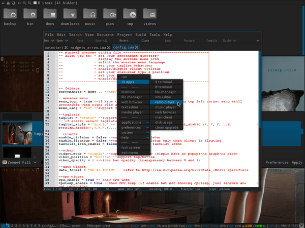

lang fr|gb

the awesome session
special feature: session configured by Aphelion :)
Awesome is a window manager using the principle of different tiling windows on the screen. that is to say that each window using the full remaining space and does not overlap with one another. Awesome is highly configurable and its configuration files are written in the Lua language. Awesome let you choose dynamically a layout on each workspace. Awesome is based on the code of DWM. its main features:
- stable, fast and light
- uses faster asynchronous XCB library instead of synchronous old Xlib
- multi-head support (XRandR, Xinerama or Zaphod)
- FreeDesktop standards implementation : EWMH, XDG Base Directory, XEmbed, System Tray
- real transparency support (through Composite extension & xcompmgr)
- dynamic window rearrangement on-the-fly. Popup windows are automatically floating or fixed
- disposition : automatic window managment specific on each tag
- Lua extensions
screenshot
startup
awesome is launched by the ~/bin/start/awesome_start.sh script.
to change your startup applications, simply ecdt this file:
components
awesome has been enriched with several libraries to display widgets, the menu client...
- vicious: credits: Lucas de Vries, Adrian C. (anrxc).
- couth: moc/mpd widget lib. credits: Bzed - http://awesome.naquadah.org/wiki/Calendar_widget & Marc Dequènes (Duck) - Duck@DuckCorp.org
- shifty: dynamic tag managment. credits: koniu gkusnierz@gmail.com & resixian (aka bioe007) resixian@gmail.com http://awesome.naquadah.org/wiki/index.php?title=Shifty
- toolbox: credits: Perry Hargrave
- calendar2: credits: Adrian C. anrxc.sysphere.org http://sam.zoy.org/wtfpl/COPYING
- client-menu: credits: Perry Hargrave
- teardrop: crédits: Adrian C. anrxc.sysphere.org
awesome includes a statusbar displaying severals informations about your system and its utilisation:
- topbar displays: menu, taglist, layout buttontasklist, wibox and systray.
- bottombar, hidden by default (Ctrl+Alt+b to toggle hide), displays: network information, moc player infos & uptime.

{kind=link}
{kind=link}
awesome configuration
usualy, awesome configuration is made by editing its main config file: ~/.config/awesome/rc.lua. but on livarp, Aphelion has divided this big file into various files and has created ~/.config/awesome/config.lua, fully commented, a magic file that let you configure awesome without understand LUA (like me)... thanks Aphelion :D
the magic file: config.lua:
this file cans configure the directories to use, the font, the wibox (widgets on statusbar), menu & help language ...
-- minimal awesome config file ----------------------------------------- -- allow you to: - set your screenshot directory -- - display the awesome menu icon -- - select the awesome menu language -- - set your taglist behaviour -- - enable/disqble client titlebar -- - set your statusbar type & position -- - set your date format -- - enable/disable widgets ------------------------------------------------------------------------ -- folders screenshots = home .. "/tmp/" --awesome menu menu_icon = true --if true the Awesome menu icon will show on top left corner menu still accessible with right clic and Alt+p menu_lang = "en" --support fr and en --taglists taglist = "static" --support static/dynamic -- if static select taglists_type taglist_style = "arabic" -- we support arabic (1,2,3...),east_arabic (١, ٢, ٣,...), persian_arabic(٠,١,٢,٣,۴,....}, roman (I, II, III, IV,) --clients enable_titlebar = false --enable clients titlebar enable_floatbar = false --enable clients titlebar only when client is floating tasklist_icon_enable = false --enable client tasklist icons --wibox: widget_mode = "arrow" --support simple/arrow (simple have no popups-no graph-no pics) wibox_position = "bottom" --support top/bottom wibox_opacity = 1 --wibox bar opacity (transparency between 0 and 1) --date widget date_format = "%b,%d %H:%M" -- refer to http://en.wikipedia.org/wiki/Date_(Unix) specifiers --cpu widget cpu_enable = true -- Show CPU info cputemp_enable = true --Show CPU temp (if enable but not showing cputemp, your sensors are not recognize) --mem widget mem_enable = true -- Show memory bar --disk widget diskroot_enable = true --show root partition usage --system uptime_enable = false -- show uptime and load --network widget net_enable = true --show net traffic apt_enable = true --show apt update if any (need "apt-show-versions" to be installed) gmail_enable = false --show unread mail in gmail box (need ~/.netrc with -> machine mail.google.com login 'e-mail address' password 'password') weather_enable = false --show weather info weather_code = "LFPO" --if show weather is enable use this code --volume widget vol_enable = true --enable volume widget --bat widget battery_enable = true -- Show battery state --moc widget moc_enable = true cmus_enable = false --Aphelion@2013---------------------------------------------------------
keybinds/mousebinds
shortcuts are configured in ~/.config/awesome/config/keys.lua & prefferdapps.lua
keybinds available with the help-button on awesome top_bar.
menus:
- awesome menu: menu icon on statusbar, Alt+p or right-click on desktop
- dmenu: Alt+F2
- prompt: Alt+r
- search the web: Alt+F3
control:
- reload awesome: Ctrl+Alt+r
- quit awesome: Ctrl+Alt+q or from awesome menu:exit
clients:
- close client: Alt+q
- previous client: Alt+j
- next client: Alt+k
- last client: Alt+Tab
- swap with the previous client: Ctrl+Alt+j
- swap with the next client: Ctrl+Alt+k
- toggle free the client: Ctrl+Alt+Space
- move client: Alt+left-clic
- resize client: Alt+right-clic
navigation:
- previous/next tag: Alt+Left/Right
- swap with last tag: Alt+Esc
- tag with previous/next tag: Alt(+Shift)+n
- goto 'urgent' tag: Alt+u
- add a tag: Alt+a
- rename a tag: Alt+Shift+r
- delete a tag: Alt+Shift+d
layout
- increase master area: Alt+l
- decrease master area: Alt+h
- next layout: Alt+Space
- previous layout: Alt+Shift+Space
launchers:
- launch default terminal: Alt+Enter
- launch prompt: Alt+r
- launch ranger: Alt+f
- launch rox-filer: Alt+Shift+f
- launch firefox: Alt+w
- launch weechat: Alt+i
- music player: Alt+m